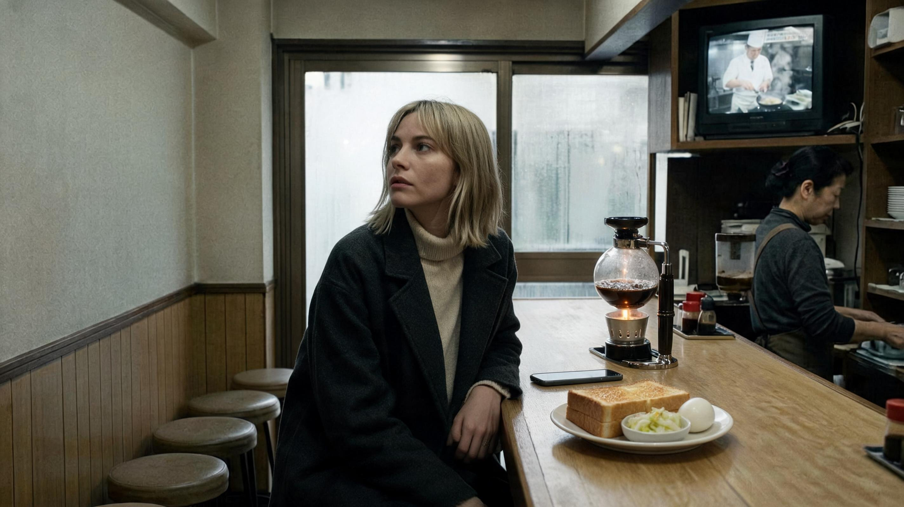
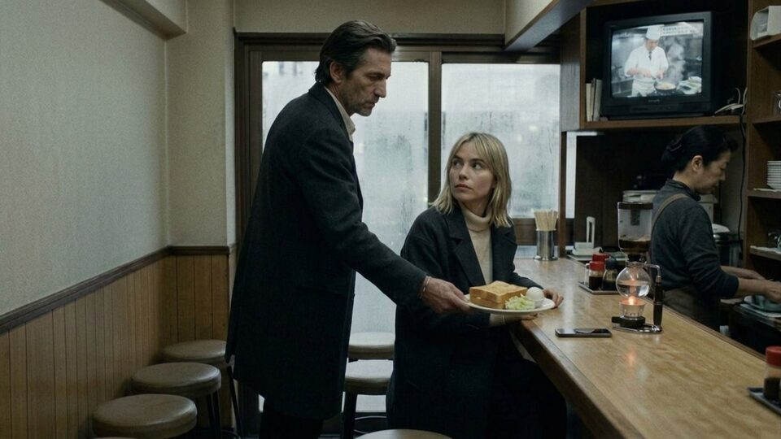
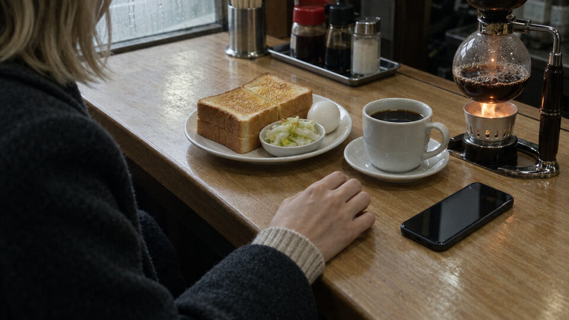

SHOT 01 · nw_s25a · nw_b634 (20.42s -> 10.42s + 10.00s)
The day has started without her
“Vera sits with her coat still on and her phone face up beside her, already looking at the door as though the day has started without her.”

Option 2 of 2 selected (2848×1600) · Original file kept as generated · Open full-size image ↗
Surrounding frames


Prompt & references
Create ONE horizontal widescreen 16:9 photorealistic cinematic film still for the Tokyo noir drama Nobody's Witness, bridging the two supplied adjacent reference frames inside a narrow Tokyo coffee counter at breakfast. Keep the same place and people: pale wooden counter, six stools, glass siphon coffee brewer bubbling over a flame, CRT on the shelf showing a morning cooking show, windows fogged from inside, blonde Vera in her dark overcoat over a cream turtleneck, and the middle-aged cook in apron behind the pass. Compose a medium shot along the counter: Vera sits with her coat still buttoned, her phone face up on the wood beside a paper cup, her head already turned toward the fogged door as though the day has started without her; the thickening steam of the siphon and a cutting board of thick toast anchor the counter in front of her. Soft grey morning light through fogged glass, warm interior tungsten, restrained realistic noir cinematography, natural hands and proportions, full 16:9 landscape frame with headroom. No other customers, no captions, subtitles, readable invented text or watermarks.
- Preceding shared still:
/film/img/s25a/287-breakfast.jpg - Following still:
/film/img/s25a/448-breakfast-nobody-asked-for.jpg